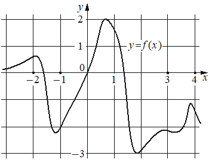

На рисунке изображён график функции На оси абсцисс отмечены точки , , 3, 4. В какой из этих точек значение производной функции наименьшее? В ответе укажите эту точку.

КЭС: 4.2 Применение производной к исследованию функций на монотонность и экстремумы. Нахождение наибольшего и наименьшего значения функции на отрезке